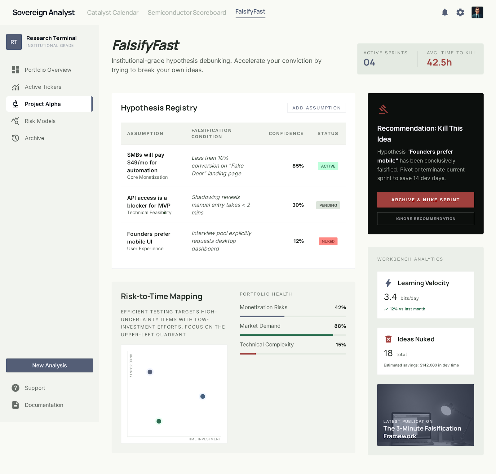

PF SAFE DEMO · 2026-03-03-p001
FalsifyFast
Push vague ideas into measurable kill criteria fast so weak assumptions get tested before more work happens.
ingest status
Imported from Stitch exportOriginal Stitch output is preserved locally while the public PF demo uses a dependency-light safe viewer with the approved screen.
- Source preserved as local artifact
- Public demo path avoids remote CDN dependency
- Preview uses the shipped Stitch screen
